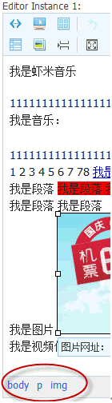
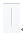
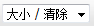
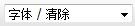
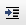
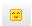

插件名称列表¶
elementpaths¶
主要用户开发, 显示光标处所在dom路径.

sourcearea¶
点击后可以查看编辑器产生的html代码.

preview¶
点击后可以弹出新窗口, 查看编辑器的内容预览.

templates¶
点击后可以弹出模板选择窗口, 选定后可以将模板代码插入到编辑器光标所在处.

separator¶
间隔线.

undo¶
可以撤销重做.

removeformat¶
可以清除选择区域的编辑格式(字体, 大小, 加粗).
font¶
大小: 可以改变选择区域字体的大小.
字体: 可以改变选择区域的字体种类.
粗体: 可以将选择区域文字加粗.

斜体: 可以将选择区域文字倾斜.

下划线: 可以给选择区域文字加下划线.

删除线: 可以给选择区域文字加删除线.

format¶
可以将光标所在处块加入标题格式.

color¶
设置选择区域的文本颜色.

设置选择区域的背景颜色.

list¶
为选择区域或光标所在处加上项目编号.

为选择区域或光标所在处加上列表编号.

indent¶
减少光标处的缩进量.
增加光标处的缩进量.

justify¶
左对齐: 光标所在块左对齐.

居中对齐: 光标所在块居中对齐.

右对齐: 光标所在块右对齐.

link¶
编辑选择区域的超链接.
image¶
输入图像地址将图像插入到光标所在处.
flash¶
输入flash地址将flash插入到光标所在处.
music¶
输入音乐地址将音乐插入到光标所在处.

smiley¶
选择表情并将对应表情插入到光标所在处.

table¶
输入表格相关参数并将对应表格插入到光标所在处.
resize¶
可拖动调整编辑区域大小.

pagebreak¶
插入分页标记.

maximize¶
将编辑器充满整个屏幕.


Loading